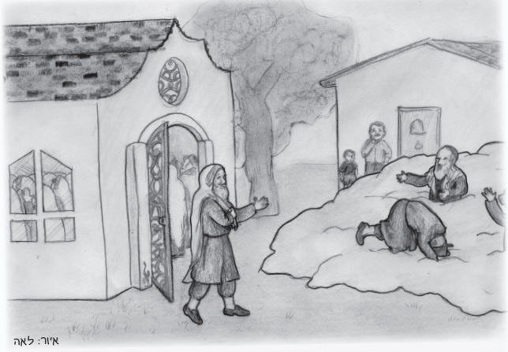

A Gift for Moshiach

“Something must be done about Benedict the informer!”
R’ Leibush, the rosh ha’kahal (head of the community) in a small town in Galicia, said this firmly as he banged strongly on the wooden table in shul.
Everyone knew precisely what he meant. Boruch, who had changed his name to Benedict (which means blessing in Latin), turned their small mistakes into terrible crimes and ran to tattle on them to the authorities.
“And he looks to tattle,” chimed in R’ Shmerel the gabbai, “specifically targeting tzaddikim and the g’dolei ha’dor, that wicked one.”
From all sides could be heard murmurings of consent.
“Let us go to Reb Zev Wolf of Zhbarazh and ask him to curse Benedict and cause him to depart this world,” said R’ Leibush.
• • •
“You want me to curse that Jew?”
R’ Zev scanned the distinguished delegation with a compassionate look and then said, “It is Erev Shabbos today. Something so significant like cursing a Jew is not a proper preparation for Shabbos Kodesh. Let us welcome the Shabbos with joy. After Shabbos, we will see what to do.”
Sunday morning:
“Rebbe,” said R’ Leibush who presented their request again, “living in the shadow of an informer is intolerable. Please curse him and let us finally have relief!”
A small smile appeared on the tzaddik’s face. He asked, “When Moshiach comes, all the rulers of the nations will gather to give him a present, as the verse says. Do you know what the present will be?”
The members of the delegation cast wondering glances at one another and remained silent. “If you don’t know,” said R’ Zev, “I will tell you:
Before Moshiach comes, the Jewish people will be busy with their work. The wine seller will pour a bottle of liquor for his eager customers and the textile seller will cut material for the merchant in his store. Then, suddenly, outside there will be the sound of a great commotion.
“What is happening?” they will ask.
“When I arrived, the street was quiet,” a customer will shrug his shoulders, and the merchant will run outside, holding a piece of fabric.
On the street they will see numerous Jews. Men, women and children will stream in one direction. “What happened?” the customer will tug on the sleeve of one of the passersby.
“What? Didn’t you hear?” the person will look at him in wonder. “Moshiach arrived!”
“Moshiach arrived,” the customer will whisper in amazement.
“And where is everyone running to?” He will stop one passerby to ask.
“To shul!”
“To grab more mitzvos. We lack merits. The money we amassed in business won’t pave the way for us to Moshiach.”
The customer will follow the crowd to the shul.
At the textile shop, the owner will wait and wait. Why didn’t the customer return? Then he will hear the sound of a shofar from the street. The seller will jump toward the doorway. “Moshiach has come!” he will hear, and then he too will be off and running to the shul. The sounds of prayer will rent the heavens. The Jewish people will all do teshuva.
Then the cloud will appear. A heavenly voice will call out the names of a few special people whose teshuva rent the heavens and they will join Moshiach on the heavenly clouds.
Those who remain will cry in regret. They will shout, “What will be with us? Will we remain in exile forever?” Their cries will rise and the cloud will come back and fill up with Jews whose teshuva was now accepted. Then the cloud will make its way from exile to Eretz Yisroel and back again, until all will gather with the redeemer.
And what will happen in the lands of the gentiles who will remain behind? The trumpeting of the Geula will reverberate in their kings’ palaces. A tremendous fear will fill their hearts. “After we treated the Jews so badly for two thousand years, their redeemer will now come to take revenge on us!”
All the kings will gather in an attempt to find a solution. A gift for Moshiach! “That is how we will appease him and he will have mercy on us and not pay us back with what we deserve.”
What gift does Moshiach need? There will be many opinions. A lot of gold, a rich king will say. We will bow humbly before him, another king, who runs after honor, will say. Let us give him an entire country, another ruler, one who loves power, will suggest.
Then, a smart king will get up and say: Do you think Moshiach needs your silly gifts? Let us give him a present that is the most valuable thing to him, a Jew! We will place this Jew in a fancy carriage and put a crown on his head, and we will all hang our crowns around him. This will demonstrate to Moshiach that we want to appease him.
“Excellent idea!” all the rulers will exult. “There is just one little problem. Throughout our kingdoms, did one foolish Jew remain who preferred to stay in exile than to go with Moshiach?”
“One Jew will remain in exile, a wicked man, someone who has no obvious connection to his people.” R’ Zev stared at the members of the delegation who were hanging on to every word he said. “Do you know who that will be? Your informer. The kings will place him in a magnificent carriage and put a crown on his head, and lead him with great honor straight to Moshiach.
When the kings will announce to Moshiach that they have a gift for him, he will ask them, “What is the gift?” And they will say, “A Jew!”
“A Jew!” Moshiach will stand up from his throne and say, “A Jew is the most precious gift. Even the worst Jew is more beloved to me than all the treasures of the world.”
R’ Zev concluded his fascinating tale with this piercing question, “And you want me to curse this important gift?”
Beis Moshiach (staff). "A Gift for Moshiach." Beis Moshiach, no. 1061 (March 14, 2017).